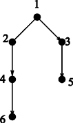

Home Page
F.A.Qs
Statistical Charts
Past Contests
Scheduled Contests
Award Contest
| Online Judge | Problem Set | Authors | Online Contests | User | ||||||
|---|---|---|---|---|---|---|---|---|---|---|
| Web Board Home Page F.A.Qs Statistical Charts | Current Contest Past Contests Scheduled Contests Award Contest | |||||||||
|
Language: A Scheduling Problem
Description There is a set of jobs, say x1, x2, …, xn, to be scheduled. Each job needs one day to complete. Your task is to schedule the jobs so that they can be finished in a minimum number of days. There are two types of constraints: Conflict constraints and Precedence constraints. Conflict constraints: Some pairs of jobs cannot be done on the same day. (Maybe job xi and job xj need to use the same machine. So they must be done in different dates). Precedence constraints: For some pairs of jobs, one needs to be completed before the other can start. For example, maybe job xi cannot be started before job xj is completed. The scheduling needs to satisfy all the constraints. To record the constraints, we build a graph G whose vertices are the jobs: x1, x2, …, xn. Connect xi and xj by an undirected edge if xi and xj cannot be done on the same day. Connect xi and xj by a directed edge from xi to xj if xi needs to be completed before xj starts. If the graph is complicated, the scheduling problem is very hard. Now we assume that for our problems, the constraints are not very complicated: The graph G we need to consider are always trees (after omitting the directions of the edges). Your task is to find out the number of days needed in an optimal scheduling for such inputs. You can use the following result: If G is a tree, then the number of days needed is either k or k + 1, where k is the maximum number of vertices contained in a directed path of G, i.e., a path P = (x1, x2, …, xk), where for each i = 1, 2, …, k − 1, there is a directed edge from xi to xi + 1. Figure 1 below is such an example. There are six jobs: 1, 2, 3, 4, 5, 6. From this figure, we know that job 1 and job 2 must be done in different dates. Job 1 needs to be done before job 3, job 3 before job 5, job 2 before job 4 and job 4 before job 6. It is easy to verify that the minimum days to finish all the jobs is 4 days. In this example, the maximum number k of vertices contained in a directed path is 3.  Figure 1: Example Input The input consists of a number of trees (whose edges may be directed or undirected), say T1, T2, …, Tm, where m ≤ 20. Each tree has at most 200 vertices. We represent each tree as a rooted tree (just for convenience of presentation, the root is an arbitrarily chosen vertex). Information of each of the trees are contained in a number of lines. Each line starts with a vertex (which is a positive integer) followed by all its sons (which are also positive integers), then followed by a 0. Note that 0 is not a vertex and it indicates the end of that line. Now some of the edges are directed. The direction of an edge can be from father to son, and can also be from son to father. If the edge is from father to son, then we put a letter “d” after that son (meaning that it is a downward edge). If the edge is from son to father, then we put a letter “u” after that son (meaning that it is an upward edge). If the edge is undirected then we do not put any letter after the son. The first case of the sample input below is the example in Figure 1. Consecutive vertices (numbers or numbers with a letter after it) in a line are separated by a single space. A line containing a single 0 means the end of that tree. The next tree starts in the next line. Two consecutive lines of single 0 means the end of the input. Output The output contains one line for each test case. Each line contains a number, which is the minimum number of days to finish all the jobs in that test case. Sample Input 1 2 3d 0 2 4d 0 3 5d 0 4 6d 0 0 1 2d 3u 4 0 0 1 2d 3 0 2 4d 5d 10 0 3 6d 7d 11 0 6 8d 9 12 0 0 1 2 3 4 0 2 5d 0 3 6d 0 4 7d 0 5 8d 0 6 9d 0 7 10d 0 0 0 Sample Output 4 3 4 3 Source |
[Submit] [Go Back] [Status] [Discuss]
All Rights Reserved 2003-2013 Ying Fuchen,Xu Pengcheng,Xie Di
Any problem, Please Contact Administrator